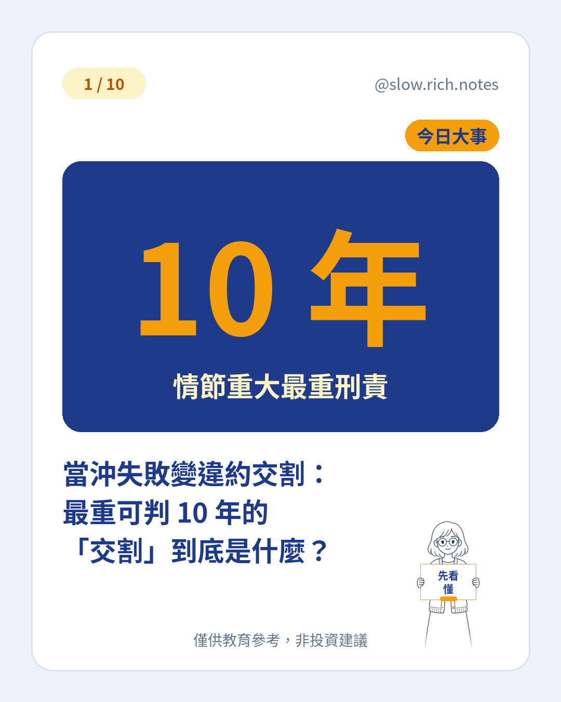

11/3 台股重挫 1,612 點、跌幅 3.59%（詳見台股史上第 7 大跌點）。大跌日最怕的不只是賠錢，而是「買了股票卻付不出錢」。這件事有個正式名稱：違約交割。
在台股買股票，成交當天（T 日）不用馬上付錢，但要在第二個營業日（T+2）上午 10 點前，把錢存進交割帳戶。如果那時銀行扣不到足夠的款項，就是違約交割。
為什麼大跌或當沖失敗特別容易出事？當沖是同一天買進又賣出，只結算價差。但如果買進後股價大跌、跌停賣不掉，或來不及沖掉，就得拿出整筆買進的錢交割。原本以為只要付差價，結果要付全額，就可能付不出來。
後果第一項是違約金：證券商可以向違約客戶收取最高相當成交金額 7% 的違約金，並追討因違約產生的債務和費用；當沖的違約，則以沖銷後的差價金額作為違約金上限。
第二項是股票被處分、帳戶被註銷。券商會先代辦交割，再把股票拿到市場賣掉抵債；不夠的話，可以處分你其他的款券，甚至向你追償。申報違約後 3 個營業日內沒有清償，帳戶就會被註銷。
第三項是開戶受限和信用紀錄。違約未結案且未滿 5 年，各家券商都應拒絕你開戶，已開戶的也應拒絕你下單或申購。違約紀錄會留在「證券商聯合徵信系統」，結案後從註記「已結案」那天起再揭露 3 年。
第四項是刑責，但只限情節重大的情況。證券交易法第 155 條規定，成交後不履行交割、足以影響市場秩序者屬違法行為；證交所說明，這類情節重大的案件可能面臨 3 年以上、10 年以下的刑責。不是每一次違約都會這麼重，但風險真的存在。
怎麼避免？一、下單前先確認交割帳戶餘額，買多少就準備多少。二、別把當沖當成「不用本金」，賣不掉時就要付全額。三、跟券商設定自己負擔得起的交易額度。四、記得 T+2 上午 10 點就要扣款，真的發現錢不夠，立刻聯絡營業員。借錢投資的風險也很類似，可以延伸讀融資斷頭是什麼。
投資最基本的規則是：買得起才買。想把基本功一步步打穩，可以先免費領取《投資新手入門清單》。